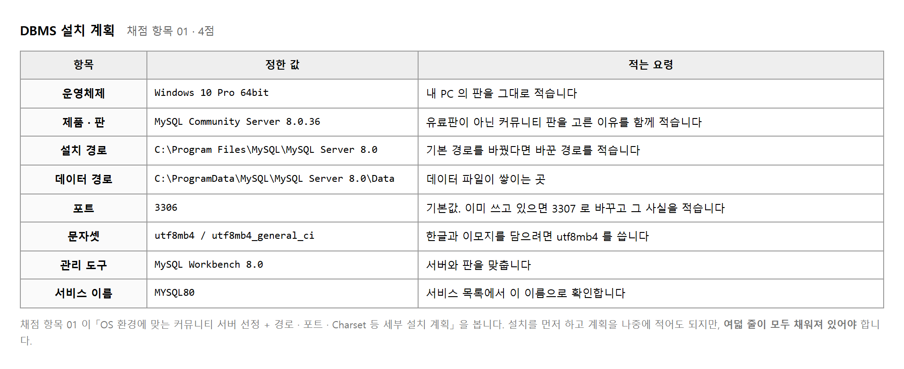
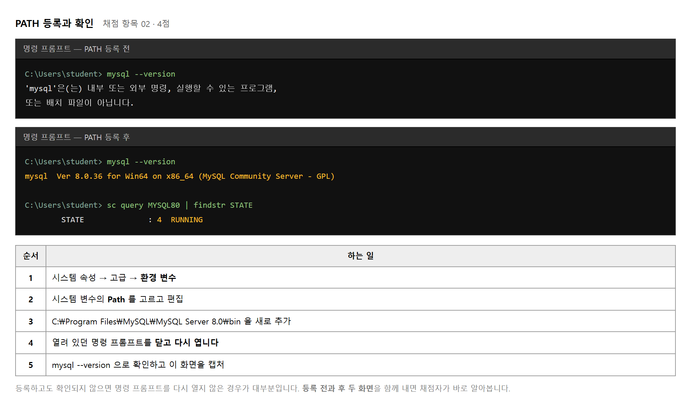
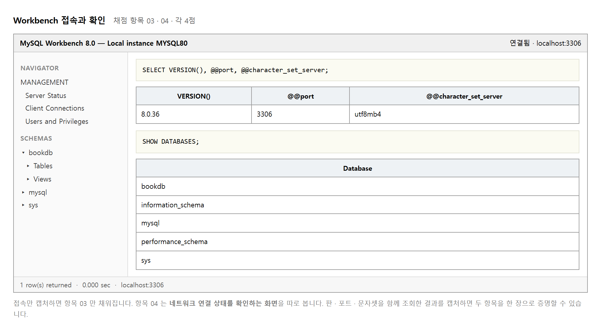
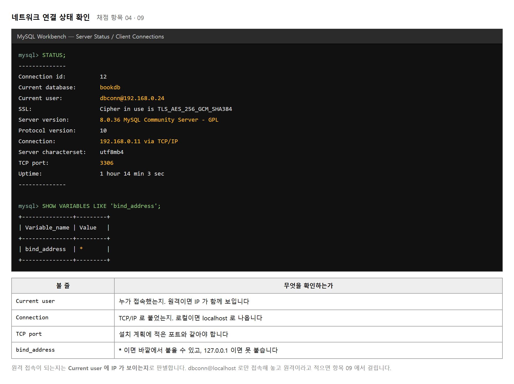
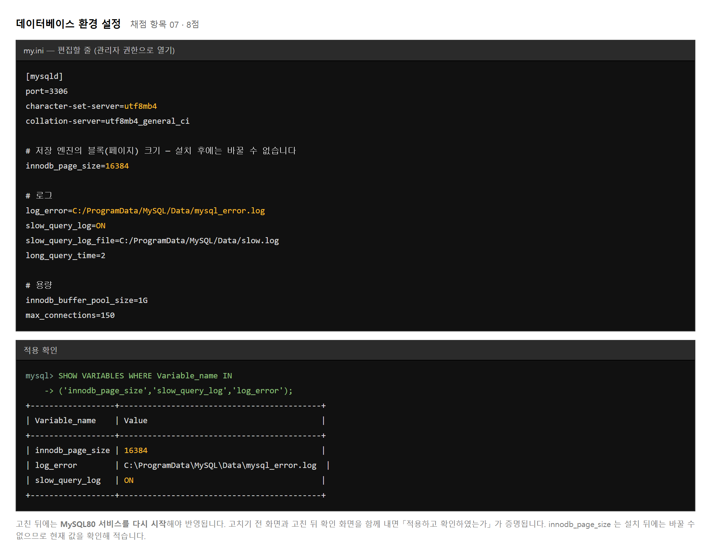
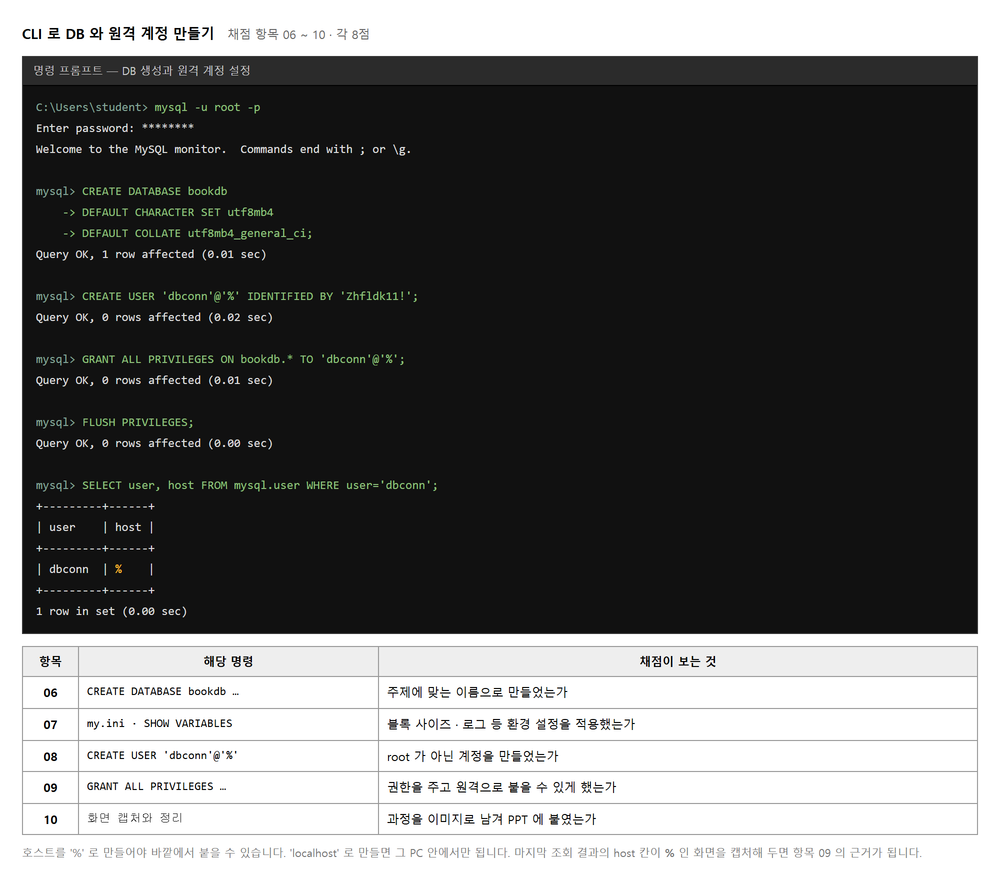
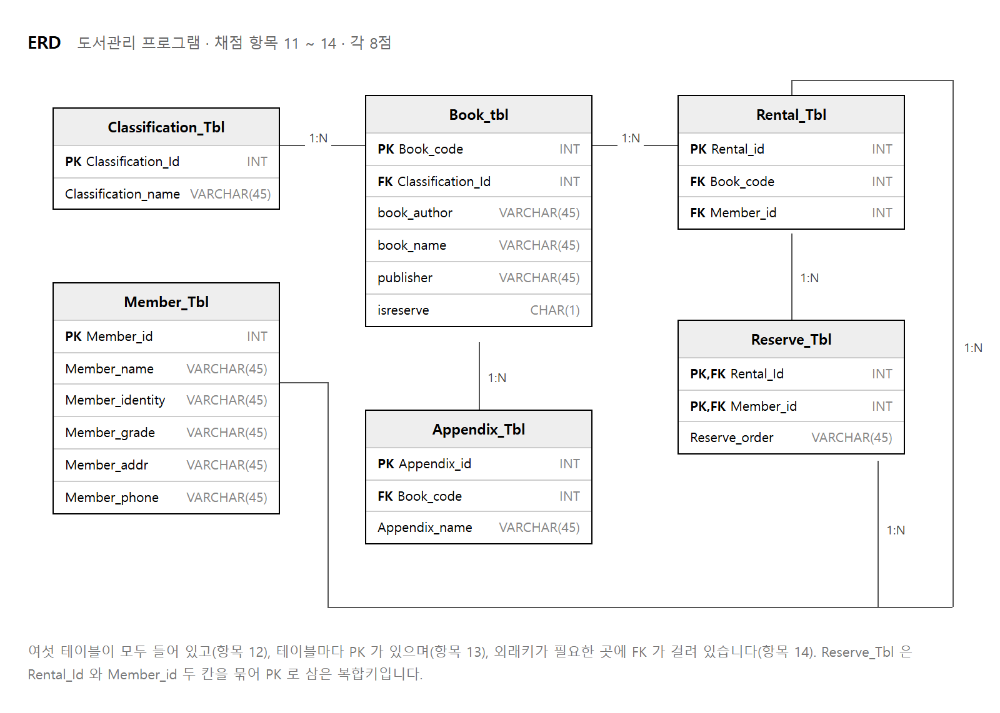
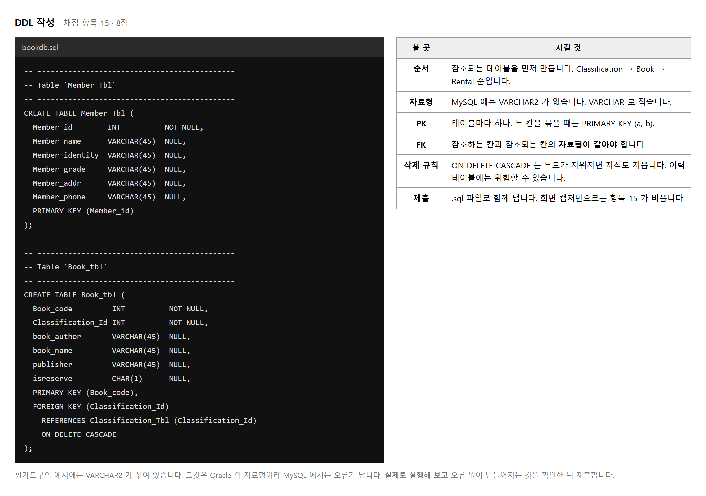
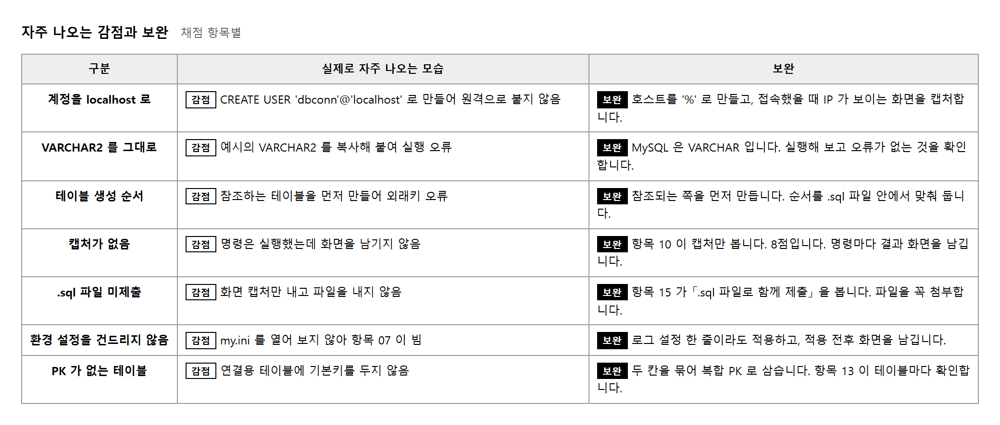

능력단위 데이터베이스 구현 (2001020405_19v4) / 4수준 · 평가방법 서술형 (20점) + 문제해결 시나리오 (80점)
제출물은 세 문제를 한 파일에 담은 PPT 한 벌과 .sql 파일 하나입니다. 평가방법이 둘로 나뉘어 있습니다. 문제 1이 서술형, 문제 2와 3이 문제해결 시나리오입니다.
| 문제 | 하는 일 | 확인하는 것 | 배점 |
|---|---|---|---|
| 1 | MySQL · Workbench 설치와 환경 설정 | 설치 계획 · PATH · 접속 · 연결 확인 · 검증 정리 (각 4점) | 20 |
| 2 | CLI 로 DB 생성과 원격 계정 설정 | DB 생성 · 환경 설정 · 계정 · 권한 · 캡처 (각 8점) | 40 |
| 3 | ERD 설계와 DDL 작성 | ERD · 테이블 · PK · FK · DDL (각 8점) | 40 |
평가도구의 채점표 머리에는 문제 2가 30점, 문제 3이 50점으로 적혀 있으나, 항목 배점을 더하면 각각 40점이고 작업지시서에도 문제 2가 40점으로 되어 있습니다. 이 교안은 20 · 40 · 40 으로 봅니다. 어느 쪽이든 항목별 8점은 같습니다.
세 요소가 그대로 작업 순서입니다. DBMS 를 깔고, 그 안에 데이터베이스를 만들고, 그 안에 테이블을 채웁니다. 앞 단계가 끝나지 않으면 다음 단계로 갈 수 없습니다.
수행준거가 거의 모두 「…하고 완료 보고서를 작성할 수 있다」 로 끝납니다. 작업 자체보다 작업했다는 것을 남기는 일이 절반입니다. 이 교과에서 캡처를 강조하는 이유가 그것입니다.
다섯 단계로 나누었습니다. 예제는 평가도구 작업지시서에 실린
도서관리 프로그램이고, 데이터베이스 이름은 bookdb 입니다.
실제 평가에서는 조별 주제에 맞는 이름을 씁니다.
레벨 1과 2는 각자 자기 PC 에서 합니다. 설치와 계정은 사람마다 해 보아야 합니다. 레벨 3부터는 조별로 하나의 ERD 를 만듭니다.
| 쪽 | 내용 | 채점 항목 |
|---|---|---|
| 1 | 표지 | — |
| 2 | 설치 계획표 | 01 |
| 3 | 설치 화면 · PATH 등록 전후 | 02 |
| 4 | Workbench 접속 화면 | 03 |
| 5 | 네트워크 연결 확인 화면 | 04 |
| 6 | 설치 검증 정리 | 05 |
| 7 | DB 생성 명령과 결과 | 06 |
| 8 | 환경 설정 파일과 적용 확인 | 07 |
| 9 | 계정 생성과 권한 부여 | 08 · 09 |
| 10 | 원격 접속 확인 화면 | 09 · 10 |
| 11 | ERD | 11 ~ 14 |
| 12 | DDL 과 실행 결과 | 15 |
윈도에서 Win + Shift + S 를 누르면 화면의 일부를 오려 낼 수 있습니다.
오려 낸 것은 클립보드에 들어가므로 슬라이드에 바로 붙일 수 있습니다.
캡처할 때는 명령과 결과가 한 장에 함께 보이게 잘라야 합니다. 결과만 오려 내면 무엇을 실행한 결과인지 알 수 없어 근거가 되지 못합니다.
목적 — 이 교과의 산출물은 캡처 모음입니다. 붙일 자리를 먼저 만들어 두면, 실습하면서 한 장씩 채우게 되고 마지막에 빈 쪽이 곧 놓친 항목이 됩니다.
위의 쪽 순서 표를 그대로 옮깁니다. 아직 내용은 넣지 않습니다.
쪽 오른쪽 아래에 작게 적습니다. 예를 들어 3쪽에는 02,
9쪽에는 08 · 09 입니다.
번호가 없는 쪽은 표지뿐이어야 합니다.
Win + Shift + S 를 누르면
화면이 어두워지고 마우스로 필요한 부분만 오려 낼 수 있습니다.
오려 낸 것은 클립보드에 들어가므로 슬라이드에서
Ctrl + V 로 바로 붙입니다.
| 이렇게 자르면 감점 | 이렇게 자릅니다 |
|---|---|
결과만 오려 냄8.0.36 한 줄만 보임 |
명령과 결과를 한 장에C:\>mysql --version 부터 결과까지 |
| 창 전체를 통째로 글씨가 작아 안 읽힘 |
필요한 부분만 크게 |
데이터베이스구현_홍길동.pptx
.sql 파일도 함께 내므로 같은 규칙으로 이름을 정해 둡니다 —
데이터베이스구현_홍길동.sql.
제출물 — 열두 쪽 뼈대 파일 1부 (제목과 채점 번호만)
스스로 확인 —
① 채점 항목 15개 번호가 모두 어느 쪽엔가 적혀 있습니까
② Win+Shift+S 로 한 번 잘라
슬라이드에 붙여 보았습니까

netstat -ano | findstr 3306 으로 미리 확인합니다.utf8 은 세 바이트까지만 담습니다.
이모지가 들어가면 오류가 나므로 utf8mb4 로 정합니다.C:\> netstat -ano | findstr 3306 아무것도 나오지 않으면 3306 을 쓸 수 있습니다.
목적 — 깔기 전에 정합니다. 깔고 나서 적으면 계획이 아니라 기록입니다. 여덟 줄이 모두 차야 채점 항목 01 이 충족됩니다.
준비물 — 인터넷이 되는 PC, 명령 프롬프트
계획표의 「운영체제」 칸에 적을 값입니다.
Win+R → cmd 에서 칩니다.
systeminfo | findstr /C:"OS 이름" /C:"시스템 종류"
64비트가 아니면 최신 MySQL 을 깔 수 없으므로 여기서 먼저 걸러집니다.
netstat -ano | findstr 3306
| 나온 결과 | 뜻과 할 일 |
|---|---|
| 아무것도 안 나온다 | 3306 을 쓸 수 있습니다. 계획표에 3306 |
LISTENING 6372 처럼 나온다 |
누군가 이미 쓰고 있습니다. 맨 오른쪽 숫자가 PID 입니다.
누구인지 확인하고, 계획표에 3307 처럼 다른 번호를 적습니다 |
누가 쓰고 있는지는 PID 로 찾습니다.
tasklist /FI "PID eq 6372"
「무엇을」만 적지 말고 「왜」를 한 줄 붙입니다. 채점자가 보는 것은 고른 이유입니다.
| 칸 | 적을 값 (예) | 붙일 이유 |
|---|---|---|
| 제품 | MySQL Community 8.0 | 무료라서 만 적지 않습니다 — 뒤 교과의 서버 프로그램과 붙고, Windows 를 지원하며, 판올림이 유지되고 있음 |
| 판 | 8.0.36 | LTS 계열이라 수업 기간 중 바뀌지 않음 |
| 운영체제 | Windows 11 64비트 | 절차 1 에서 확인한 값 |
| 포트 | 3306 | 절차 2 에서 비어 있음을 확인 |
| 문자셋 | utf8mb4 | MySQL 의 utf8 은 세 바이트까지만 담아
이모지에서 오류가 남 |
| 설치 경로 | C:\Program Files\MySQL\... |
기본값. 한글이나 빈칸이 든 경로를 피함 |
| 관리 도구 | MySQL Workbench | 설치 관리자에 함께 들어 있음 |
| 계정 | root + 원격용 계정 따로 | root 를 원격으로 열지 않기 위함 |
utf8 이라고 적으면 안 됩니다.
MySQL 의 utf8 은 진짜 UTF-8 이 아니라 세 바이트짜리 반쪽입니다.
utf8mb4 가 네 바이트를 모두 담는 쪽입니다.계획표와 함께 절차 2 의 netstat 결과를 붙이면
「포트를 확인하고 정했다」가 증명됩니다.
제출물 — 설치 계획표 1장 + netstat 결과 캡처
스스로 확인 —
① 여덟 줄이 모두 차 있습니까
② 문자셋이 utf8mb4 입니까
③ 포트를 확인하고 정했습니까 (캡처가 있습니까)
④ 제품을 고른 이유가 「무료」 말고 더 있습니까

mysql 이라고 치면 윈도는 그 이름의 실행 파일을 정해진 폴더 목록에서 찾습니다.
그 목록이 PATH 입니다. MySQL 의 bin 폴더가 목록에 없으면
그 폴더로 직접 들어가야만 명령이 돕니다.
등록한 뒤에도 되지 않으면 대부분 명령 프롬프트를 다시 열지 않아서입니다. PATH 는 창이 열릴 때 한 번 읽히므로, 이미 열려 있던 창에는 반영되지 않습니다.
mysql --version 을 쳐서 실패하는 화면을 캡처하십시오.
그 다음 등록하고 다시 쳐서 성공하는 화면을 캡처합니다.
두 장이 나란히 있으면 「등록하여 환경 설정을 완료하였는가」 가 한눈에 증명됩니다.
목적 — 등록 전 실패 화면과 등록 후 성공 화면 두 장을 만듭니다. 두 장이 나란히 있어야 「등록하여 환경 설정을 완료하였는가」가 증명됩니다.
준비물 — 관리자 권한이 있는 PC, 실습 2-2 의 계획표
설치하기 전이나, 설치했더라도 PATH 를 걸기 전에 명령 프롬프트에서 칩니다.
mysql --version
'mysql'은(는) 내부 또는 외부 명령... 이라고 나옵니다.
이 화면을 캡처하십시오. 지금 안 찍으면 다시 만들 수 없습니다.
dev.mysql.com 에서 MySQL Installer for Windows 를 내려받습니다.위 [그림] 의 다섯 단계를 그대로 따릅니다.
붙여 넣을 경로는 설치한 곳의 bin 폴더입니다.
C:\Program Files\MySQL\MySQL Server 8.0\bin
여기서 거의 모두 한 번씩 막힙니다. PATH 는 창이 열릴 때 한 번만 읽힙니다. 열려 있던 명령 프롬프트에는 반영되지 않습니다.
mysql --version — 판이 나오면 성공입니다.sc query MySQL80 | findstr STATE — RUNNING 이면
서버도 떠 있습니다.두 명령의 결과가 한 화면에 보이게 잘라서 캡처합니다.
where mysql 을 쳐 봅니다. 아무것도 안 나오면 PATH 가 잘못 들어간 것입니다.
② 환경 변수 창을 다시 열어 맨 끝에 \ 를 붙이지 않았는지 봅니다.
③ 사용자 변수가 아니라 시스템 변수의 Path 에 넣었는지 봅니다.제출물 — 3쪽에 붙일 캡처 두 장 (등록 전 실패 화면, 등록 후 성공 화면) + 설치 화면
스스로 확인 —
① 실패 화면과 성공 화면이 둘 다 있습니까
② 성공 화면에 명령과 결과가 함께 보입니까
③ sc query 결과가 RUNNING 입니까
④ root 비밀번호를 적어 두었습니까

채점 항목이 나뉘어 있습니다. 03 은 접속했는가, 04 는 연결 상태를 확인하는 화면을 제출하였는가 입니다. 접속 화면 한 장으로는 04 가 비게 됩니다.

STATUS; 한 줄이면 필요한 값이 모두 나옵니다.마지막 항목은 「정상적으로 수행되었음을 증명하는 결과를 정리」 입니다. 캡처를 늘어놓는 것이 아니라 표 한 장으로 정리합니다.
| 확인 항목 | 확인 방법 | 결과 | 근거 쪽 |
|---|---|---|---|
| 서버 설치 | sc query MYSQL80 | RUNNING | 3쪽 |
| PATH 등록 | mysql --version | 8.0.36 | 3쪽 |
| 관리 도구 접속 | Workbench 연결 | 성공 | 4쪽 |
| 포트 · 문자셋 | SELECT @@port, @@character_set_server |
3306 / utf8mb4 | 5쪽 |
계획표에 적은 값과 결과 칸의 값이 같아야 합니다. 포트를 3307 로 바꿨다면 계획표도 3307 이어야 합니다.
목적 — 채점 항목이 셋으로 나뉘어 있습니다. 03 접속했는가 · 04 연결 상태 확인 화면을 냈는가 · 05 검증을 정리했는가. 한 장으로 셋을 다 받을 수 없습니다.
준비물 — 실습 2-3 에서 설치한 MySQL 과 Workbench
왼쪽 SCHEMAS 가 함께 보이게 잘라 캡처합니다. 빈 편집창만 찍으면 접속했는지 알 수 없습니다.
127.0.0.1, Port 계획표에 적은 번호,
Username root 를 넣고 [Test Connection] 으로 먼저 확인합니다.접속 화면과 다른 항목입니다. Workbench 의 편집창에 한 줄 치고 실행합니다
(Ctrl + Enter).
STATUS;
한 줄로 필요한 값이 모두 나옵니다 — 접속 계정, 포트, 문자셋, 서버 판, 접속 방식. 이 결과를 따로 캡처해 5쪽에 붙입니다.
| STATUS 에 나오는 줄 | 확인할 것 |
|---|---|
Server version | 계획표의 판과 같은가 |
TCP port | 계획표의 포트와 같은가 |
Server characterset | utf8mb4 인가 |
마지막 항목은 캡처를 늘어놓는 것이 아닙니다. 「무엇을 어떻게 확인했고 결과가 무엇이며 몇 쪽에 있는가」를 표로 만듭니다.
| 확인 항목 | 확인 방법 | 결과 | 근거 쪽 |
|---|---|---|---|
| 서버 설치 | sc query MySQL80 |
RUNNING | 3쪽 |
| PATH 등록 | mysql --version |
8.0.36 | 3쪽 |
| 관리 도구 접속 | Workbench 연결 | 성공 | 4쪽 |
| 포트 · 문자셋 | STATUS; |
3306 / utf8mb4 | 5쪽 |
3307 로 정했다면
이 표의 결과도 3307 이어야 합니다.
계획은 3306 인데 결과가 3307 이면 채점자는 둘 중 하나가 거짓이라고 봅니다.
포트를 바꿨다면 계획표로 돌아가 고치십시오.제출물 — 4쪽 접속 화면, 5쪽 STATUS 결과, 6쪽 검증 정리표
스스로 확인 —
① 접속 화면에 왼쪽 SCHEMAS 가 보입니까
② STATUS 결과를 따로 캡처했습니까 (항목 04)
③ 검증 표의 근거 쪽이 실제로 그 쪽입니까
④ 계획표의 포트 · 문자셋과 결과가 같습니까
작업지시서가 「CLI(명령 프롬프트) 환경에서」 라고 못 박고 있습니다. Workbench 에서 같은 일을 해도 결과는 같지만, 채점자가 보는 것은 명령을 쳐서 나온 화면입니다.
C:\> mysql -u root -p Enter password: ******** Welcome to the MySQL monitor. Commands end with ; or \g. mysql> SELECT USER(), @@hostname;
| 증상 | 원인과 처리 |
|---|---|
| Access denied for user 'root' | 설치할 때 정한 root 비밀번호가 다릅니다. 기억나지 않으면 다시 설치하는 편이 빠릅니다. |
| Can't connect to MySQL server | 서비스가 꺼져 있습니다. net start MYSQL80 으로 켭니다. |
명령을 쳤는데 -> 만 나옴 |
세미콜론을 빠뜨렸습니다. ; 를 치고 엔터를 누릅니다. |
| 한글이 깨져 보임 | chcp 65001 로 코드 페이지를 바꾸고 다시 접속합니다. |
목적 — 문제 2 는 전부 명령 프롬프트에서 합니다. 본격적으로 만들기 전에 들어가고 나오는 것부터 손에 익힙니다.
준비물 — 실습 2-3 에서 PATH 를 건 명령 프롬프트, root 비밀번호
chcp 65001
Active code page: 65001 이라고 나오면 됩니다.
이걸 안 하면 뒤에서 만든 한글 자료가 ??? 로 보입니다.
접속하기 전에 해야 합니다.
mysql -u root -p
Enter password: 에서 비밀번호를 칩니다.
화면에 아무것도 나타나지 않습니다. 그대로 치고 엔터를 누릅니다.
mysql> 로 바뀌면 들어간 것입니다.
| 뜻 | 표시 |
|---|---|
C:\> | 윈도 명령 프롬프트 — 여기서는 dir 같은 윈도 명령 |
mysql> | MySQL 안 — 여기서는 SQL. 끝에 세미콜론 |
-> | 세미콜론을 빠뜨렸습니다. ; 를 치고 엔터 |
SELECT USER(), @@hostname, @@version;
명령과 결과가 한 장에 보이게 잘라 7쪽에 붙입니다.
| 나온 말 | 까닭과 할 일 |
|---|---|
Access denied for user 'root' |
비밀번호가 다릅니다. 설치할 때 적어 둔 것을 봅니다. 기억나지 않으면 다시 까는 편이 빠릅니다 |
Can't connect to MySQL server |
서버가 꺼져 있습니다 — net start MySQL80 |
'mysql'은(는) 내부 또는 외부 명령... |
PATH 문제입니다. 실습 2-3 절차 4 로 돌아갑니다 |
한글이 ??? 로 보임 |
절차 1 을 빠뜨렸습니다. exit 로 나와
chcp 65001 하고 다시 들어갑니다 |
net start 가 거부되면 —
명령 프롬프트를 관리자 권한으로 열어야 합니다.
시작 단추에서 cmd 를 찾아 오른쪽 단추 → [관리자 권한으로 실행].exit
mysql> 에서만 듣습니다. 윈도 프롬프트에서 치면 창이 닫힙니다.
제출물 — 7쪽에 붙일 접속 확인 캡처 1장
스스로 확인 —
① mysql> 가 보입니까
② 캡처에 친 명령이 함께 보입니까
③ chcp 65001 을 먼저 했습니까
mysql> CREATE DATABASE bookdb
-> DEFAULT CHARACTER SET utf8mb4
-> DEFAULT COLLATE utf8mb4_general_ci;
Query OK, 1 row affected (0.01 sec)
mysql> SHOW DATABASES;
mysql> USE bookdb;
문자셋을 적지 않으면 서버 기본값이 붙습니다.
서버를 utf8mb4 로 맞춰 두었더라도 만들 때 함께 적어 두는 편이 낫습니다.
나중에 다른 서버로 옮길 때 값이 따라갑니다.
채점 항목 06 이 「프로젝트 주제에 맞는 DB명을 선정하고」 입니다.
test 나 mydb 로 만들면 주제에 맞다고 보기 어렵습니다.
약함 testdb · db1
권함 bookdb — 도서관리 · rentaldb — 대여관리
이름은 소문자로 짓습니다. 윈도에서는 대소문자를 가리지 않지만 리눅스 서버로 옮기면 가리기 때문에, 소문자로 통일해 두면 나중에 문제가 없습니다.
수행준거 2.1 에 「데이터 파일 · 컨트롤 파일 · 로그 파일에 필요한 용량을 산정」 이 들어 있습니다. MySQL 은 파일을 손으로 잡지 않지만, 예상 건수 × 한 줄 크기로 대략을 적어 두면 이 준거를 설명할 수 있습니다.
| 테이블 | 예상 건수 | 한 줄 크기 | 합계 |
|---|---|---|---|
| Member_Tbl | 3,000 | 약 230 byte | 약 0.7 MB |
| Book_tbl | 20,000 | 약 190 byte | 약 3.8 MB |
| Rental_Tbl | 100,000 | 약 12 byte | 약 1.2 MB |
| 합계 (인덱스 포함 1.5배) | 약 9 MB | ||
목적 — 주제가 드러나는 이름으로, 문자셋을 적어서 만듭니다. 채점 항목 06 이 「주제에 맞는 DB명을 선정하고 생성하였는가」입니다.
준비물 — mysql> 프롬프트 (실습 2-5)
| 이렇게 지으면 약합니다 | 이렇게 짓습니다 |
|---|---|
testdb · db1 · mydb주제가 드러나지 않습니다 |
bookdb — 도서 관리rentaldb — 대여 관리 |
소문자로 짓습니다. 윈도는 대소문자를 가리지 않지만 리눅스 서버로 옮기면 가리기 때문에, 소문자로 통일해 두면 나중에 탈이 없습니다.
CREATE DATABASE bookdb
DEFAULT CHARACTER SET utf8mb4
DEFAULT COLLATE utf8mb4_general_ci;
Query OK, 1 row affected 이 나오면 됐습니다.
-> 가 나오는데
잘못된 것이 아닙니다. 「아직 안 끝났다」는 뜻입니다.
마지막 줄에 ; 를 치면 그때 실행됩니다.SHOW DATABASES;
USE bookdb;
SELECT DATABASE();
SHOW DATABASES 목록에 bookdb 가 보이고,
SELECT DATABASE() 가 bookdb 를 돌려주면 확인된 것입니다.
| 목록에 함께 보이는 것 | 무엇인가 |
|---|---|
information_schema | 서버가 자기 구조를 담아 두는 곳 |
mysql | 계정과 권한이 들어 있는 곳 (실습 2-8 에서 씁니다) |
performance_schema · sys | 성능을 재는 곳 |
이 넷은 MySQL 이 만들어 둔 것이므로 건드리지 않습니다.
SHOW CREATE DATABASE bookdb;
결과에 DEFAULT CHARACTER SET utf8mb4 가 보이면 됐습니다.
이 화면이 곧 근거이므로 캡처합니다.
수행준거 2.1 에 「데이터 파일 · 로그 파일에 필요한 용량을 산정」이 들어 있습니다. MySQL 은 파일을 손으로 잡지 않으므로, 예상 건수 × 한 줄 크기로 대략을 적어 두면 됩니다.
| 테이블 | 예상 건수 | 한 줄 | 대략 |
|---|---|---|---|
| 회원 | 1,000 | 0.5 KB | 0.5 MB |
| 도서 | 5,000 | 0.5 KB | 2.5 MB |
| 대여 | 50,000 | 0.2 KB | 10 MB |
| 합계 + 로그 · 색인 여유 (2배) | 약 30 MB | ||
제출물 — 7쪽에 붙일 캡처
(CREATE DATABASE 부터 SHOW CREATE DATABASE 까지) + 용량 산정표
스스로 확인 —
① 이름에 주제가 드러납니까 (test 가 아닙니까)
② SHOW CREATE DATABASE 에 utf8mb4 가 보입니까
③ 캡처에 Query OK 가 들어 있습니까

채점 항목 07 이 「블록 사이즈, 로그 관리 등 환경 설정을 적용하였는가」 입니다. 블록 사이즈는 설치 뒤에는 바꿀 수 없으므로, 로그 설정을 손보는 편이 현실적입니다.
| 설정 | 값 | 무엇을 하는가 |
|---|---|---|
| innodb_page_size | 16384 (기본) | 저장 단위 크기. 설치 뒤에는 바꿀 수 없습니다. 현재 값을 확인해 적습니다 |
| log_error | 경로 | 서버가 죽었을 때 원인을 남기는 곳 |
| slow_query_log | ON | 느린 질의를 기록합니다 |
| long_query_time | 2 | 몇 초를 넘으면 느리다고 볼 것인가 |
| max_connections | 150 | 동시에 붙을 수 있는 수 |
C:\ProgramData\MySQL\MySQL Server 8.0\my.ini 에 있습니다.
ProgramData 는 숨은 폴더이므로 주소창에 직접 쳐서 들어갑니다.
net stop MYSQL80 뒤 net start MYSQL80 입니다.
오류가 나면 설정에 오타가 있는 것이므로 log_error 파일을 봅니다.
SHOW VARIABLES LIKE 'slow_query_log'; 로 확인하고 그 화면을 캡처합니다.
목적 — 설정 파일을 고치고, 다시 켜고, 바뀐 것을 확인합니다. 세 가지가 다 있어야 채점 항목 07 이 충족됩니다.
준비물 — 관리자 권한 명령 프롬프트
mysql> 에서 칩니다. 전후 비교의 「전」입니다.
SHOW VARIABLES WHERE Variable_name IN
('innodb_page_size','slow_query_log','long_query_time',
'max_connections','log_error');
이 화면을 먼저 캡처합니다.
C:\ProgramData\MySQL\MySQL Server 8.0\my.ini
ProgramData 는 숨은 폴더입니다.
탐색기 주소창에 위 경로를 직접 쳐서 들어갑니다.my.ini.bak). 잘못되면 서버가 안 뜹니다.[mysqld] «아래에» 넣습니다[mysqld]
slow_query_log = ON
slow_query_log_file = "C:/ProgramData/MySQL/MySQL Server 8.0/Data/slow.log"
long_query_time = 2
max_connections = 150
[client] 나 [mysql] 아래에 적으면 서버가 읽지 않습니다.
반드시 [mysqld] 아래여야 합니다.
경로의 빗금 방향에도 주의하십시오 — / 를 쓰거나
\\ 처럼 두 번 씁니다.innodb_page_size 는 설치할 때 정해지면 바꿀 수 없습니다.
억지로 고치면 서버가 아예 안 뜹니다.
그래서 현재 값(16384)을 확인해 적는 것까지가 이 항목의 범위이고,
실제로 손보는 것은 로그 설정입니다.net stop MySQL80
net start MySQL80
고치기만 하고 다시 켜지 않으면 반영되지 않습니다. 설정 파일은 서버가 켜질 때 한 번 읽힙니다.
log_error 입니다.
보통 ...\Data\{PC이름}.err 이고, 맨 아래 몇 줄에 까닭이 적혀 있습니다.
고칠 수 없으면 my.ini.bak 으로 되돌리고 다시 시작하십시오.절차 1 과 똑같은 명령을 다시 칩니다. 값이 바뀌어 있으면 적용된 것입니다.
| 설정 | 전 | 후 |
|---|---|---|
slow_query_log | OFF | ON |
long_query_time | 10.000000 | 2.000000 |
max_connections | 151 | 150 |
innodb_page_size | 16384 | 16384 (못 바꿈) |
전 화면과 후 화면 두 장을 8쪽에 나란히 붙입니다.
제출물 — 8쪽에 붙일 캡처 3장 (설정 전 값 · my.ini 고친 부분 · 다시 켠 뒤 값)
스스로 확인 —
① 전 · 후 두 화면이 둘 다 있습니까
② 값이 실제로 바뀌어 있습니까 (안 바뀌었으면 구역이나 재시작 문제)
③ my.ini 에서 고친 줄이 [mysqld] 아래입니까

% 인 것이 근거입니다.MySQL 의 계정은 이름과 호스트가 한 쌍입니다.
dbconn@localhost 와 dbconn@% 는 다른 계정입니다.
| 호스트 | 어디서 붙을 수 있는가 | 쓰는 자리 |
|---|---|---|
localhost | 그 PC 안에서만 | 서버와 프로그램이 같은 PC 에 있을 때 |
% | 어디서든 | 이번 평가에서 요구하는 것 |
192.168.0.% | 같은 내부망에서만 | 실무에서 흔히 쓰는 절충 |
평가는 원격 접속이 가능해야 한다고 되어 있으므로 % 로 만듭니다.
mysql> CREATE USER 'dbconn'@'%' IDENTIFIED BY 'Zhfldk11!'; mysql> GRANT ALL PRIVILEGES ON bookdb.* TO 'dbconn'@'%'; mysql> FLUSH PRIVILEGES; mysql> SHOW GRANTS FOR 'dbconn'@'%'; 준 권한을 확인
ON bookdb.* 는 bookdb 안의 모든 것이라는 뜻입니다.
ON *.* 로 하면 서버의 모든 데이터베이스에 권한을 주게 되므로
실무에서는 쓰지 않습니다. 평가에서는 어느 쪽이든 항목 09 를 충족하지만,
왜 그렇게 했는지 한 줄 적어 두면 좋습니다.
CREATE USER 가 거절될 수 있습니다.
대문자 · 소문자 · 숫자 · 특수문자를 섞고 8자를 넘기면 통과합니다.
작업지시서의 Zhfldk11! 은 그 조건을 만족합니다.
목적 — 바깥에서 붙을 수 있는 계정을 만들고, 그 계정에 필요한 만큼만 권한을 줍니다. 채점 항목 08 · 09, 각 8점입니다.
준비물 — mysql> 에 root 로 들어간 상태
MySQL 계정은 이름 하나가 아니라 이름 + 호스트 한 쌍입니다.
dbconn@localhost 와 dbconn@% 는 서로 다른 계정입니다.
| 호스트 | 어디서 붙을 수 있나 | 쓰는 자리 |
|---|---|---|
localhost | 그 PC 안에서만 | 서버와 프로그램이 같은 PC 일 때 |
% | 어디서든 | 이번 평가에서 요구하는 것 |
192.168.0.% | 그 내부망에서만 | 실무에서 흔히 쓰는 절충 |
CREATE USER 'dbconn'@'%' IDENTIFIED BY 'Zhfldk11!';
Query OK, 0 rows affected 가 나옵니다.
0 rows 가 정상입니다 — 자료를 넣은 것이 아니라 계정을 만든 것이라서 그렇습니다.
1234 같은 것은 받지 않습니다.
Zhfldk11! 처럼 네 종류를 섞으십시오.GRANT ALL PRIVILEGES ON bookdb.* TO 'dbconn'@'%';
FLUSH PRIVILEGES;
| 적은 것 | 뜻 |
|---|---|
ALL PRIVILEGES | 조회 · 추가 · 수정 · 삭제 · 테이블 만들기 모두 |
ON bookdb.* | bookdb 안의 모든 것 — 다른 DB 에는 손대지 못함 |
TO 'dbconn'@'%' | 절차 2 에서 만든 그 계정 |
ON *.* 로 하지 않는가 —
*.* 는 서버의 모든 데이터베이스입니다.
mysql 데이터베이스(계정과 권한이 든 곳)까지 열어 주게 됩니다.
평가에서는 어느 쪽이든 항목 09 를 충족하지만,
왜 그렇게 했는지 말할 수 있어야 합니다.
「필요한 데이터베이스에만 줬다」가 바른 답입니다.SHOW GRANTS FOR 'dbconn'@'%';
두 줄이 나옵니다. 잘못된 것이 아닙니다.
| 나온 줄 | 무엇인가 |
|---|---|
GRANT USAGE ON *.* TO `dbconn`@`%` |
「붙을 수는 있다」는 뜻뿐입니다. 계정을 만들면 저절로 붙는 줄이며 권한이 아닙니다 |
GRANT ALL PRIVILEGES ON `bookdb`.* TO `dbconn`@`%` |
이 줄이 우리가 준 권한입니다 |
SELECT user, host FROM mysql.user WHERE user = 'dbconn';
host 칸이 % 인 것이 항목 08 의 근거입니다.
이 화면을 반드시 캡처하십시오.
제출물 — 9쪽에 붙일 캡처
(CREATE USER → GRANT → SHOW GRANTS →
SELECT user, host 네 단계)
스스로 확인 —
① host 칸이 % 입니까 (localhost 면 다시)
② SHOW GRANTS 에 bookdb 가 보입니까
③ 왜 *.* 가 아니라 bookdb.* 인지 말할 수 있습니까
④ 비밀번호를 적어 두었습니까 (실습 2-9 에서 씁니다)
계정을 % 로 만들었다고 바로 붙지는 않습니다. 막는 곳이 셋 있습니다.
| 막는 곳 | 확인 | 여는 법 |
|---|---|---|
| 계정 호스트 | SELECT user, host FROM mysql.user; |
host 가 % 인지 봅니다 |
| 서버 바인딩 | SHOW VARIABLES LIKE 'bind_address'; |
127.0.0.1 이면 * 로 고치고 다시 켭니다 |
| 윈도 방화벽 | 인바운드 규칙에 3306 이 있는가 | TCP 3306 인바운드 허용 규칙을 만듭니다 |
같은 조 다른 사람의 PC 에서 붙어 보는 것이 가장 확실합니다.
혼자 확인하려면 127.0.0.1 대신 자기 PC 의 내부망 IP 로 붙습니다.
C:\> ipconfig | findstr IPv4 IPv4 주소 . . . . . . . . . : 192.168.0.11 C:\> mysql -h 192.168.0.11 -u dbconn -p mysql> STATUS; Current user: dbconn@192.168.0.11 <- IP 가 보이면 원격으로 붙은 것입니다 Connection: 192.168.0.11 via TCP/IP
Current user 에 자기 IP 가 아닌 상대 IP 가 보이면
원격 접속이 확실히 되는 것입니다. 그 화면을 캡처해 두면 항목 09 의 근거가 됩니다.
목적 — 계정을 % 로 만들었다고 바로 붙지는 않습니다.
막는 곳 셋을 차례로 열고, 붙은 화면을 남깁니다.
채점 항목 09 · 10, 각 8점입니다.
준비물 — 실습 2-8 의 dbconn 계정과 비밀번호
| 막는 곳 | 확인 | 여는 법 |
|---|---|---|
| 계정 호스트 | SELECT user, host FROM mysql.user; |
host 가 % 인지 (실습 2-8) |
| 서버 바인딩 | SHOW VARIABLES LIKE 'bind_address'; |
127.0.0.1 이면 my.ini 에
bind-address=0.0.0.0 을 넣고 다시 켭니다 |
| 윈도 방화벽 | 인바운드 규칙에 3306 이 있는가 | 아래 절차 2 |
bind_address 가 * 이면
이미 열려 있는 것입니다. 손댈 필요가 없습니다.관리자 권한 명령 프롬프트에서 한 줄이면 됩니다.
netsh advfirewall firewall add rule name="MySQL 3306" dir=in action=allow protocol=TCP localport=3306
확인 또는 Ok. 이 나오면 됐습니다.
이 화면도 캡처해 두면 「설정 과정」의 근거가 됩니다.
ipconfig | findstr IPv4
192.168. 로 시작하는 것이 내부망 주소입니다.
127.0.0.1 로 붙으면 원격이 아닙니다 — 그 주소는 「나 자신」입니다.
mysql -h 192.168.0.11 -u dbconn -p
들어가지면 바로 확인합니다.
SELECT USER(), CURRENT_USER();
STATUS;
| 나오는 것 | 예 | 무엇을 말해 주나 |
|---|---|---|
USER() | dbconn@192.168.0.11 |
어디서 붙었는가 — IP 가 보이면 원격입니다 |
CURRENT_USER() | dbconn@% |
어느 계정 정의에 걸렸는가 — % 계정이 쓰였다는 증거 |
Connection | 192.168.0.11 via TCP/IP |
같은 PC 안이 아니라 망을 타고 붙었다는 뜻 |
USER() 에 IP 가 찍히고,
CURRENT_USER() 가 @% 이면
「원격 계정으로 원격에서 붙었다」가 한 장으로 증명됩니다.
@localhost 로 보이면 원격이 아닙니다.붙은 김에 권한 없는 데이터베이스에 손대 봅니다.
USE mysql;
ERROR 1044 (42000): Access denied for user 'dbconn'@'%' to database 'mysql'
거부되는 것이 정상이고 잘 된 것입니다.
bookdb.* 로 좁혀 준 권한이 실제로 듣고 있다는 뜻이며,
실습 2-8 절차 3 의 「왜 *.* 가 아닌가」에 대한 답이 됩니다.
가장 확실한 방법입니다. 옆 사람에게 내 IP · 계정 · 비밀번호를 알려 주고 그 PC 에서 붙게 합니다. 옆 사람 화면을 캡처해 받으면 「다른 PC 에서 붙었다」가 분명해집니다.
Can't connect 이면 방화벽이나 바인딩(절차 1·2)입니다.
② Access denied for user 'dbconn'@'192.168...' 이면
서버까지는 닿았고 계정 호스트가 문제입니다 — % 인지 다시 봅니다.
두 오류는 막힌 곳이 다릅니다.제출물 — 10쪽에 붙일 캡처
(방화벽 규칙 · ipconfig · 원격 접속 후 USER()/STATUS
· 권한 거부 화면)
스스로 확인 —
① USER() 에 127.0.0.1 이 아닌 IP 가 찍혔습니까
② CURRENT_USER() 가 @% 입니까
③ 접속한 명령줄이 캡처에 함께 보입니까 (-h 뒤 주소)
④ 권한 밖 데이터베이스에서 거부되는 것을 확인했습니까
주제를 한 문장으로 적고 명사에 밑줄을 그으면 테이블 후보가 나옵니다.
주제 회원이 도서를 대여하고, 없으면 예약한다. 도서는 분류를 가지며 부록이 딸릴 수 있다.
| 명사 | 테이블 | 남길 것 |
|---|---|---|
| 회원 | Member_Tbl | 이름 · 신분 · 등급 · 주소 · 전화 |
| 도서 | Book_tbl | 저자 · 서명 · 출판사 · 예약여부 |
| 분류 | Classification_Tbl | 분류명 |
| 대여 | Rental_Tbl | 누가 · 어느 책을 |
| 예약 | Reserve_Tbl | 누가 · 어느 대여건에 · 몇 번째로 |
| 부록 | Appendix_Tbl | 부록명 · 어느 책의 것인가 |
isreserve)으로 두면 됩니다.
테이블로 빼면 오히려 조회가 번거로워집니다.채점 항목 12 는 「필요한 테이블이 모두 포함되었는가」 만 봅니다. 지나치게 나누는 쪽보다 빠뜨리지 않는 쪽에 무게를 둡니다.
목적 — 테이블을 상상해서 만들지 않습니다. 주제 문장의 명사가 테이블이 됩니다. 채점 항목 12, 8점입니다.
준비물 — 종이와 연필 (아직 컴퓨터는 필요 없습니다)
회원이 도서를 대여하고, 없으면 예약한다.
도서는 분류를 가지며 부록이 딸릴 수 있다.
연필로 그어 보십시오. 회원 · 도서 · 대여 · 예약 · 분류 · 부록 여섯입니다.
| 명사 | 테이블 이름 | 남길 것 |
|---|---|---|
| 회원 | Member_Tbl | 이름 · 신분 · 등급 · 주소 · 전화 |
| 도서 | Book_Tbl | 서명 · 저자 · 출판사 · 예약여부 |
| 분류 | Classification_Tbl | 분류명 |
| 대여 | Rental_Tbl | 누가 · 어느 책을 · 언제 |
| 예약 | Reserve_Tbl | 누가 · 어느 대여건에 · 몇 번째로 |
| 부록 | Appendix_Tbl | 부록명 · 어느 책의 것인가 |
명사라고 다 테이블이 되는 것은 아닙니다. 둘은 빼야 합니다.
| 이런 것 | 어떻게 하나 | 까닭 |
|---|---|---|
| 「예약 가능 여부」 값이 하나뿐 |
도서의 한 칸으로IsReserve CHAR(1) |
테이블로 빼면 조회할 때마다 이어 붙여야 해 번거로워집니다 |
| 「대여 중인 권수」 계산으로 나옴 |
저장하지 않음 대여 테이블을 세면 나옴 |
따로 저장하면 실제와 어긋날 수 있습니다 |
여섯 개를 다 짓기 전에 규칙을 먼저 정해 두면 흔들리지 않습니다.
| 흔들리는 이름 | 규칙을 정한 이름 |
|---|---|
member · Book_Tbl · tbl_rental꼬리가 제각각입니다 |
모두 _Tbl 로 끝냄 |
Member_Id · bookno · rental_seq번호 칸 이름이 제각각입니다 |
모두 {테이블}_Id |
제출물 — 테이블 목록 6줄 (이름 · 남길 것) + 빼기로 한 것 2줄과 그 까닭
스스로 확인 — ① 주제 문장의 명사가 모두 처리되었습니까 (테이블이 되거나, 빼기로 했거나) ② 이름 규칙이 여섯 개에서 일관됩니까 ③ 「계산으로 나오는 것」을 테이블로 만들지 않았습니까
테이블에서 한 줄을 딱 하나로 가리키는 칸입니다. 테이블마다 하나 있어야 합니다.
| 고르는 방법 | 예 | 비고 |
|---|---|---|
| 일련번호를 둔다 | Member_id INT |
가장 무난합니다. 값이 바뀌지 않습니다 |
| 있는 값을 쓴다 | isbn CHAR(13) |
뜻이 있지만 규칙이 바뀌면 곤란해집니다 |
| 두 칸을 묶는다 | PRIMARY KEY (Rental_Id, Member_id) |
연결용 테이블에 씁니다. 복합키라고 부릅니다 |
채점 항목 13 이 「각 테이블에 기본키가 설계 요구사항에 맞게 정의되어 있는가」 입니다. 테이블마다 확인하므로 하나라도 빠지면 걸립니다.
다른 테이블의 기본키를 가리키는 칸입니다. 가리키는 값이 실제로 있는지 데이터베이스가 대신 지켜 줍니다. 이것을 참조 무결성이라고 합니다.
FOREIGN KEY (Classification_Id) REFERENCES Classification_Tbl (Classification_Id) ON DELETE CASCADE
| 삭제 규칙 | 부모가 지워지면 | 쓸 자리 |
|---|---|---|
| ON DELETE CASCADE | 자식도 함께 지워집니다 | 부록처럼 부모가 없으면 뜻이 없는 것 |
| ON DELETE RESTRICT | 지워지지 않습니다 (기본값) | 대여 이력처럼 남겨야 하는 것 |
| ON DELETE SET NULL | 자식의 그 칸이 비워집니다 | 가리키는 곳이 없어도 되는 것. 칸이 NULL 을 받아야 합니다 |
평가도구 예시는 모두 CASCADE 로 되어 있습니다.
그대로 써도 되지만, 이력 테이블에 CASCADE 를 걸면 회원을 지울 때 대여 기록이 사라진다는
점은 알고 쓰는 편이 낫습니다.
목적 — 테이블마다 한 줄을 가리키는 칸(PK)을 두고, 남을 가리키는 칸(FK)을 잇습니다. 채점 항목 13 · 14, 각 8점입니다.
준비물 — 실습 2-10 의 테이블 목록
고민하지 말고 일련번호로 두십시오. 가장 무난하고 값이 바뀌지 않습니다.
Member_Id INT AUTO_INCREMENT PRIMARY KEY
| 고르는 방법 | 예 | 언제 |
|---|---|---|
| 일련번호를 둔다 | Member_Id INT |
대부분 이것 |
| 있는 값을 쓴다 | isbn CHAR(13) |
뜻이 있지만 규칙이 바뀌면 곤란 |
| 두 칸을 묶는다 | PRIMARY KEY (Rental_Id, Member_Id) |
연결용 테이블 (복합키) |
종이에 여섯 이름을 늘어놓고 화살표를 그립니다. 가리키는 쪽에 외래키가 생깁니다.
Book_Tbl → Classification_Tbl
Appendix_Tbl → Book_Tbl
Rental_Tbl → Book_Tbl, Member_Tbl
Reserve_Tbl → Rental_Tbl, Member_Tbl
화살표가 나가지 않는 둘(Classification_Tbl · Member_Tbl)이
가장 바깥입니다. 이 순서가 그대로 만드는 순서가 됩니다 (실습 2-13).
부모가 지워지면 자식을 어떻게 할지 정합니다. 셋 중 하나입니다.
| 규칙 | 부모가 지워지면 | 쓸 자리 |
|---|---|---|
ON DELETE CASCADE | 자식도 함께 지워짐 | 부모가 없으면 뜻이 없는 것 — 부록 |
ON DELETE RESTRICT | 지워지지 않음 (기본값) | 남겨야 하는 것 — 대여 이력 |
ON DELETE SET NULL | 자식의 그 칸이 비워짐 | 가리키는 곳이 없어도 되는 것 |
CASCADE 로 되어 있으므로 그대로 써도 됩니다.
다만 왜 그렇게 했는지 물으면 답할 수 있어야 합니다 —
「연습용이라 정리하기 쉽게」가 솔직한 답이고,
실무라면 대여 이력은 RESTRICT 로 두어 지워지지 않게 합니다.| 테이블 | 기본키 | 외래키 | 삭제 규칙 |
|---|---|---|---|
Classification_Tbl | Classification_Id |
— | — |
Member_Tbl | Member_Id |
— | — |
Book_Tbl | Book_Id |
Classification_Id | CASCADE |
Appendix_Tbl | Appendix_Id |
Book_Id | CASCADE |
Rental_Tbl | Rental_Id |
Book_Id · Member_Id | CASCADE |
Reserve_Tbl | Reserve_Id |
Rental_Id · Member_Id | CASCADE |
제출물 — 위와 같은 키 정의표 1장 (ERD 와 DDL 의 밑그림이 됩니다)
스스로 확인 —
① 여섯 테이블 모두 기본키가 있습니까
② 외래키의 자료형이 가리키는 기본키와 같습니까 (둘 다 INT)
③ 화살표가 나가지 않는 테이블이 무엇인지 말할 수 있습니까
④ 삭제 규칙을 왜 그렇게 정했는지 한 줄로 말할 수 있습니까

.drawio 파일을,
File → Export as → PNG 로 그림을 만듭니다.
항목 11 이 「파일로 저장하여 제출하였는가」 를 봅니다.
감점 그림만 슬라이드에 붙이고 파일을 내지 않음
권함 .drawio 파일과 .sql 파일을 함께 냅니다
목적 — 실습 2-11 의 표를 그림으로 옮기고, 그림과 파일 둘 다 냅니다. 채점 항목 11 ~ 14 가 여기에 걸려 있습니다.
준비물 — 실습 2-11 의 키 정의표, 브라우저
app.diagrams.net 에 들어가 [Device] → 빈 다이어그램.칸마다 이름 + 자료형을 적고, 앞에 PK · FK 를 표시합니다.
Book_Tbl
─────────────────────────
PK Book_Id INT
Book_Title VARCHAR(200)
Book_Author VARCHAR(45)
IsReserve CHAR(1)
FK Classification_Id INT
FK 가 있는 쪽이 N, 가리켜지는 쪽이 1 입니다.
한 분류에 책이 여럿 달리므로 Classification 1 : N Book 입니다.
| 선 | 적을 것 |
|---|---|
| Classification_Tbl — Book_Tbl | 1 : N |
| Book_Tbl — Appendix_Tbl | 1 : N |
| Member_Tbl — Rental_Tbl | 1 : N |
| Book_Tbl — Rental_Tbl | 1 : N |
| Rental_Tbl — Reserve_Tbl | 1 : N |
| Member_Tbl — Reserve_Tbl | 1 : N |
읽을 수 없으면 그려 놓고도 점수를 못 받습니다. 상자를 옮겨 선이 바깥으로 돌아가게 합니다.
Classification_Tbl · Member_Tbl)을
양쪽 끝에 둡니다.Book_Tbl 을 가운데에 둡니다.| 무엇을 | 어떻게 | 왜 |
|---|---|---|
.drawio 파일 | [File] → [Save as] | 항목 11 이 「파일로 저장하여 제출」을 봅니다 |
| PNG 그림 | [File] → [Export as] → [PNG] | 슬라이드 11쪽에 붙이기 위함 |
.drawio 파일을 내지 않는 것입니다.
제대로 그려 놓고 항목 11 을 통째로 놓칩니다.
.drawio 와 .sql 을 PPT 와 함께 냅니다.제출물 — 11쪽에 붙일 ERD 그림 + .drawio 파일
스스로 확인 —
① 여섯 상자에 모두 PK 표시가 있습니까
② 외래키 칸에 FK 표시가 있습니까
③ 관계선마다 1:N 이 적혀 있습니까
④ 선이 상자를 뚫지 않습니까
⑤ .drawio 파일을 따로 저장했습니까

.sql 파일, 오른쪽이 지킬 것입니다.| 담을 것 | 자료형 | 비고 |
|---|---|---|
| 일련번호 | INT / BIGINT |
AUTO_INCREMENT 를 붙이면 저절로 매겨집니다 |
| 짧은 글 | VARCHAR(45) |
길이는 넉넉히 잡되 뜻 없이 크게 잡지 않습니다 |
| 긴 글 | TEXT | 기본값을 줄 수 없습니다 |
| 예 / 아니오 | CHAR(1) / TINYINT(1) |
Y · N 을 담으려면 CHAR(1) |
| 날짜와 시각 | DATETIME |
DEFAULT CURRENT_TIMESTAMP 로 등록 시각을 자동으로 |
| 돈 | DECIMAL(10,2) |
FLOAT 는 오차가 생기므로 쓰지 않습니다 |
VARCHAR2(45) 는 Oracle 의 자료형입니다.
MySQL 에서 그대로 실행하면 오류가 납니다. VARCHAR(45) 로 고쳐 씁니다.
예시를 복사해 붙이고 실행해 보지 않으면 이 오류를 그대로 제출하게 됩니다.
외래키가 가리키는 테이블이 먼저 있어야 합니다. ERD 에서 화살표가 향하는 쪽을 먼저 만듭니다.
1. Classification_Tbl 아무도 가리키지 않음 2. Member_Tbl 아무도 가리키지 않음 3. Book_tbl → Classification_Tbl 4. Appendix_Tbl → Book_tbl 5. Rental_Tbl → Book_tbl, Member_Tbl 6. Reserve_Tbl → Rental_Tbl, Member_Tbl
목적 — ERD 를 그대로 SQL 로 옮깁니다. 새로 생각하지 않습니다. 채점 항목 15, 8점입니다.
준비물 — 실습 2-12 의 ERD, 메모장 또는 VS Code
C:\work\bookdb.sql
폴더 이름에 한글과 빈칸이 없게 하십시오.
나중에 SOURCE 로 실행할 때 경로 때문에 막힙니다.
메모장으로 저장할 때는 인코딩을 UTF-8 로 고릅니다.
외래키가 가리키는 테이블이 먼저 있어야 합니다. 실습 2-11 절차 2 의 화살표를 거꾸로 따라가면 순서가 나옵니다.
1. Classification_Tbl (아무도 가리키지 않음)
2. Member_Tbl (아무도 가리키지 않음)
3. Book_Tbl → Classification_Tbl
4. Appendix_Tbl → Book_Tbl
5. Rental_Tbl → Book_Tbl, Member_Tbl
6. Reserve_Tbl → Rental_Tbl, Member_Tbl
ERROR 1824 (HY000): Failed to open the referenced table 'parent'
| 담을 것 | 자료형 | 비고 |
|---|---|---|
| 일련번호 | INT AUTO_INCREMENT | 저절로 매겨집니다 |
| 짧은 글 | VARCHAR(45) | 넉넉히 잡되 뜻 없이 크게 잡지 않습니다 |
| 긴 글 | TEXT | 기본값을 줄 수 없습니다 |
| 예 / 아니오 | CHAR(1) | 'Y' · 'N' |
| 날짜와 시각 | DATETIME |
DEFAULT CURRENT_TIMESTAMP 로 등록 시각 자동 |
| 돈 | DECIMAL(10,2) | FLOAT 는 오차가 생깁니다 |
VARCHAR2(45) 는 Oracle 자료형입니다.
MySQL 에서 그대로 실행하면 이렇게 납니다.
ERROR 1064 (42000): ... right syntax to use near 'VARCHAR2(45))'
VARCHAR(45) 로 고쳐 씁니다.
예시를 복사해 붙이고 실행해 보지 않으면 이 오류를 그대로 제출하게 됩니다.CREATE TABLE Book_Tbl (
Book_Id INT AUTO_INCREMENT PRIMARY KEY,
Book_Title VARCHAR(200) NOT NULL,
Book_Author VARCHAR(45),
Book_Publisher VARCHAR(45),
IsReserve CHAR(1) DEFAULT 'N',
Classification_Id INT,
CONSTRAINT fk_book_class FOREIGN KEY (Classification_Id)
REFERENCES Classification_Tbl (Classification_Id)
ON DELETE CASCADE
);
| 줄 | 무엇을 하는가 |
|---|---|
PRIMARY KEY | 이 칸이 한 줄을 가리킨다 (항목 13) |
NOT NULL | 비워 둘 수 없다 — 꼭 있어야 하는 칸에 |
DEFAULT 'N' | 안 적으면 이 값이 들어간다 |
CONSTRAINT fk_... |
외래키에 이름을 붙입니다. 오류가 났을 때 어느 외래키인지 메시지에 이 이름이 나옵니다 (항목 14) |
book_tbl_ibfk_1 처럼 멋대로 붙입니다.
오류 메시지에 그 이름이 나오면 어느 관계가 문제인지 알아보기 어렵습니다.
fk_book_class 처럼 「어디에서 어디로」가 드러나게 짓습니다.실습 2-11 의 키 정의표를 옆에 놓고 한 줄씩 옮깁니다.
외래키의 자료형은 가리키는 기본키와 같아야 합니다 — 둘 다 INT.
제출물 — bookdb.sql 파일 1개 (여섯 테이블)
스스로 확인 —
① VARCHAR2 가 남아 있지 않습니까
② 만드는 순서가 가리켜지는 쪽부터 입니까
③ 여섯 테이블 모두 PRIMARY KEY 가 있습니까
④ 외래키마다 CONSTRAINT 이름이 붙어 있습니까
⑤ 파일을 UTF-8 로 저장했습니까
mysql> USE bookdb; mysql> SOURCE C:/work/bookdb.sql; 파일을 통째로 실행 mysql> SHOW TABLES; +-------------------+ | Tables_in_bookdb | +-------------------+ | appendix_tbl | | book_tbl | | classification_tbl| | member_tbl | | rental_tbl | | reserve_tbl | +-------------------+ 6 rows in set
경로에는 슬래시를 씁니다. 역슬래시를 쓰면 MySQL 이 다른 뜻으로 읽습니다.
수행준거 3.2 의 뒷부분이 「생성된 오브젝트에 대한 유효성 여부를 검사할 수 있다」 입니다. 아래 세 가지를 실행해 결과를 캡처하면 그 근거가 됩니다.
| 확인 명령 | 무엇을 보는가 |
|---|---|
DESC Book_tbl; |
칸 이름 · 자료형 · NULL 여부 · 키가 ERD 와 같은가 |
SHOW CREATE TABLE Book_tbl; |
실제로 걸린 외래키와 삭제 규칙 |
SELECT * FROM information_schema |
데이터베이스 전체의 키를 한 번에 |
외래키가 정말 지켜지는지 일부러 틀린 값을 넣어 봅니다. 거절당하는 화면이 곧 「무결성을 판단하였다」 는 근거입니다.
mysql> INSERT INTO Book_tbl VALUES (1, 999, '저자', '책', '출판사', 'N'); ERROR 1452 (23000): Cannot add or update a child row: a foreign key constraint fails <- 없는 분류를 가리켜 거절됨
목적 — 만든 것으로 끝내지 않습니다. 수행준거 3.2 가 「생성된 오브젝트에 대한 유효성 여부를 검사할 수 있다」입니다. 외래키가 정말 지켜지는지까지 보여 줍니다.
준비물 — 실습 2-13 의 bookdb.sql
USE bookdb;
SOURCE C:/work/bookdb.sql;
/ 로 씁니다.
C:\work\ 처럼 역빗금을 쓰면 MySQL 이 다른 뜻으로 읽어
Unknown command '\w' 같은 말이 나옵니다.SHOW TABLES;
여섯 줄이 나와야 합니다. 6 rows in set 까지 한 화면에 잘라 캡처합니다.
Book_Tbl 로 만들어도 book_tbl 로 보입니다.
리눅스 서버에서는 대소문자를 가리므로 다르게 보입니다.
둘 다 맞으므로 고치지 마십시오.| 명령 | 무엇을 보는가 |
|---|---|
DESC Book_Tbl; |
칸 이름 · 자료형 · NULL 여부 · 키가 ERD 와 같은가 |
SHOW CREATE TABLE Book_Tbl; |
실제로 걸린 외래키와 삭제 규칙 |
SELECT TABLE_NAME, COLUMN_NAME, REFERENCED_TABLE_NAME |
데이터베이스 전체의 키를 한 번에 |
DESC 결과에서 Key 칸을 보십시오.
PRI 는 기본키, MUL 은 외래키가 걸린 칸입니다.
이 단계가 유효성 검사의 핵심입니다. 거절당하는 화면이 곧 근거입니다.
INSERT INTO Book_Tbl (Book_Title, Classification_Id)
VALUES ('테스트', 999);
ERROR 1452 (23000): Cannot add or update a child row:
a foreign key constraint fails (`bookdb`.`Book_Tbl`,
CONSTRAINT `fk_book_class` FOREIGN KEY (`Classification_Id`)
REFERENCES `Classification_Tbl` (`Classification_Id`) ON DELETE CASCADE)
999 번 분류가 없으므로 데이터베이스가 막아 준 것입니다.
이것이 참조 무결성이고, 실습 2-13 에서 외래키에 이름을 붙여 둔 덕분에
메시지에 fk_book_class 가 찍혀 어느 관계인지 바로 보입니다.
INSERT INTO Classification_Tbl (Classification_Name) VALUES ('컴퓨터');
INSERT INTO Book_Tbl (Book_Title, Classification_Id) VALUES ('객체지향의 사실과 오해', 1);
SELECT b.Book_Title, c.Classification_Name
FROM Book_Tbl b JOIN Classification_Tbl c
ON b.Classification_Id = c.Classification_Id;
이번에는 들어갑니다. 막힐 때와 될 때를 나란히 캡처하면 「무결성이 작동한다」가 분명해집니다.
DELETE FROM Classification_Tbl WHERE Classification_Id = 1;
SELECT COUNT(*) FROM Book_Tbl;
ON DELETE CASCADE 가 그런 뜻입니다.
놀라지 말고 이 화면도 캡처하십시오 — 삭제 규칙을 이해했다는 근거가 됩니다.
시험한 뒤에는 자료를 다시 넣어 두십시오.| 순서 | 캡처할 것 |
|---|---|
| 1 | SOURCE 실행과 SHOW TABLES (6줄) |
| 2 | DESC 와 SHOW CREATE TABLE |
| 3 | ERROR 1452 — 무결성이 막는 화면 |
| 4 | 바르게 넣고 조회한 화면 |
제출물 — 12쪽 캡처 4장 + bookdb.sql 파일
스스로 확인 —
① SHOW TABLES 가 여섯 줄입니까
② DESC 의 Key 칸에 PRI 와 MUL 이 보입니까
③ 일부러 틀린 값을 넣어 거절당하는 화면을 남겼습니까
④ .sql 파일을 PPT 와 함께 낼 준비가 되었습니까
| 번호 | 배점 | 확인할 것 | 근거 쪽 |
|---|---|---|---|
| 01 | 4 | OS 에 맞는 커뮤니티 서버 선정과 세부 설치 계획 | |
| 02 | 4 | 서버 설치와 PATH 에 bin 경로 등록 | |
| 03 | 4 | Workbench 설치와 로컬 서버 접속 | |
| 04 | 4 | 네트워크 연결 상태를 확인하는 화면 제출 | |
| 05 | 4 | 설치와 환경 설정이 정상임을 증명하는 결과 정리 | |
| 06 | 8 | CLI 에서 주제에 맞는 DB 명으로 생성 | |
| 07 | 8 | 블록 사이즈 · 로그 등 환경 설정 적용 | |
| 08 | 8 | root 가 아닌 원격 접속 계정 생성과 비밀번호 설정 | |
| 09 | 8 | 권한 부여와 원격 접속 가능 상태 | |
| 10 | 8 | 설정 과정을 이미지로 캡처해 PPT 에 첨부 | |
| 11 | 8 | draw.io 로 ERD 를 설계하고 파일로 저장해 제출 | |
| 12 | 8 | ERD 에 필요한 테이블이 모두 포함 | |
| 13 | 8 | 각 테이블에 기본키가 정의되어 있는가 | |
| 14 | 8 | 외래키가 필요한 곳에 참조 무결성이 설정되어 있는가 | |
| 15 | 8 | DDL 을 정확히 작성하고 .sql 파일로 함께 제출 |
목적 — 내기 전에 채점자가 되어 훑습니다. 이 교과는 항목마다 캡처가 있는가로 갈리므로, 「했다」가 아니라 「몇 쪽에 있다」를 적어야 합니다.
준비물 — 지금까지 만든 PPT · .sql · .drawio
위 열다섯 줄 표의 오른쪽 칸에 쪽 번호를 적습니다. 동그라미를 치지 마십시오. 쪽 번호는 없으면 못 적습니다.
지금까지 실습에서 경고했던 자리입니다. 여기부터 짚으면 빠릅니다.
| 번호 | 자주 비는 까닭 | 돌아갈 곳 |
|---|---|---|
| 01 | 계획표 여덟 줄 중 몇 줄이 빔 | 실습 2-2 절차 3 |
| 02 | PATH 등록 전 화면이 없음 | 실습 2-3 절차 1 — 나중에 못 만듭니다 |
| 04 | 접속 화면만 있고 STATUS 가 없음 |
실습 2-4 절차 2 — 03 과 다른 항목 |
| 07 | 고치기만 하고 다시 켠 뒤 화면이 없음 | 실습 2-7 절차 5 |
| 08 | host 가 localhost 로 되어 있음 |
실습 2-8 절차 5 |
| 10 | 결과만 찍고 명령이 안 보임 | 실습 2-1 절차 3 |
| 11 | .drawio 파일을 안 냄 |
실습 2-12 절차 5 — 가장 아까운 감점 |
| 13 | 테이블 하나에 PK 가 빠짐 | 실습 2-11 절차 1 |
붙여 놓고 확인하지 않는 일이 잦습니다. 슬라이드를 넘기며 봅니다.
쪽 번호를 적은 항목의 배점을 더합니다. 문제 1 은 항목당 4점(5개 = 20점), 문제 2·3 은 항목당 8점(10개 = 80점)입니다.
제출물 — 근거 쪽이 적힌 자가 점검표 1장
스스로 확인 — ① 열다섯 항목에 모두 쪽 번호가 있습니까 ② 적어 놓은 쪽을 실제로 펴 보았습니까 ③ 캡처의 글씨가 읽힙니까
DROP DATABASE bookdb;) 처음부터 다시 만들어 봅니다.
오류 없이 끝까지 돌아야 항목 15 의 「정확하게 작성」 이 충족됩니다.
목적 — 이 교과는 파일이 셋입니다. PPT 하나만 내면 항목 11 과 15 를 놓칩니다.
| 파일 | 무엇 | 어느 실습에서 |
|---|---|---|
데이터베이스구현_1조.pptx | 캡처 모음 12쪽 | 실습 2-1 부터 계속 |
bookdb.sql | DDL | 실습 2-13 |
bookdb.drawio | ERD 원본 | 실습 2-12 절차 5 |
설치 → DB 생성 → 계정 → ERD → DDL. 채점표의 순서와 같습니다. 순서가 뒤섞이면 채점자가 항목을 찾느라 헤맵니다.
캡처만 늘어놓으면 채점자가 무엇을 보아야 할지 모릅니다. 「무엇을 하는 명령인지」와 「무엇이 확인되는지」 두 가지를 적습니다.
| 이렇게 적으면 약합니다 | 이렇게 적습니다 |
|---|---|
| 계정 생성 화면 | SHOW GRANTS 결과 —
bookdb.* 권한이 dbconn@% 에 붙은 것을 확인 |
| DDL 실행 | SOURCE 로 실행 후 SHOW TABLES —
여섯 테이블이 모두 생성됨 |
.sql 을 «처음부터» 다시 돌려 봅니다이 단계를 건너뛰지 마십시오. 만들면서 손으로 고친 것이 있으면 파일만으로는 돌지 않습니다.
DROP DATABASE bookdb;
CREATE DATABASE bookdb DEFAULT CHARACTER SET utf8mb4;
USE bookdb;
SOURCE C:/work/bookdb.sql;
SHOW TABLES;
오류 없이 끝까지 돌고 여섯 줄이 나와야 항목 15 의 「정확하게 작성」이 충족됩니다. 중간에 멈추면 그 자리를 고쳐 다시 돌립니다.
ERROR 1824) —
가리켜지는 테이블을 위로 올립니다.
② VARCHAR2 가 남아 있음 (ERROR 1064).
③ 파일 끝의 세미콜론이 빠짐 — 마지막 문장이 실행되지 않습니다.세 파일을 함께 올립니다. 올린 뒤 내려받아 열어 보십시오.
특히 .sql 은 메모장으로 열어 한글이 안 깨졌는지 봅니다.
제출물 — PPT 1개 + .sql 1개 + .drawio 1개
스스로 확인 —
① 파일이 셋 입니까
② .sql 을 처음부터 다시 돌려 보았습니까
③ 캡처마다 한 줄 설명이 있습니까
④ 올린 파일을 다시 내려받아 열어 보았습니까
아래 일곱 가지가 되풀이되는 감점입니다. 설치와 명령은 대부분 해내는데, 남기는 일과 확인하는 일에서 점수가 빠집니다.
